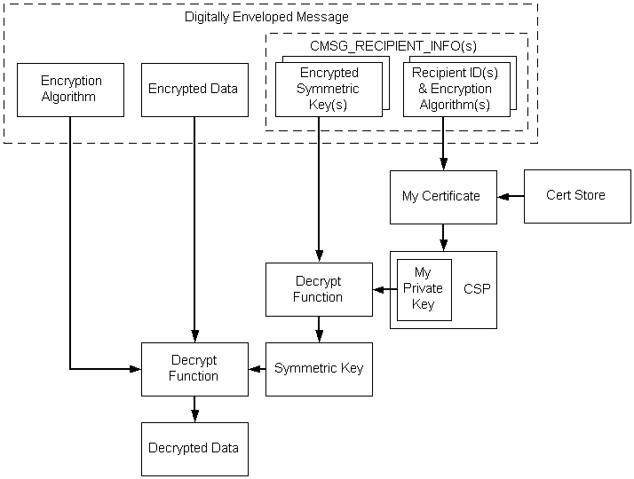

description: General tasks required to decode an enveloped message.
ms.assetid: cb71ea3a-0edd-4d46-8088-a395fab89d2b
title: Decoding Enveloped Data
ms.topic: article
ms.date: 05/31/2018
Decoding Enveloped Data
The general tasks required to decode an enveloped message are depicted in the following illustration and described in the list that follows it.

The sequence of events for decoding enveloped data using key transport key management, as depicted in the previous illustration, is as follows:
- A pointer to the digitally enveloped message is retrieved.
- A certificate store is opened.
- From the message, the recipient ID (My ID) is retrieved.
- The recipient ID is used to retrieve the certificate.
- The private key associated with that certificate is retrieved.
- The private key is used to decrypt the symmetric (session) key.
- The encryption algorithm is retrieved from the message.
- Using the private key and encryption algorithm, the data is decrypted.
The following procedure uses low-level message functions to accomplish the tasks just listed.
To decode an enveloped message
- Get a pointer to the encoded BLOB.
- Call CryptMsgOpenToDecode, passing the necessary arguments.
- Call CryptMsgUpdate once, passing in the handle retrieved in step 2 and a pointer to the data that is to be decoded. This causes the appropriate actions to be taken on the message, depending on the message type.
- Call CryptMsgGetParam, passing in the handle retrieved in step 2 and CMSG_TYPE_PARAM to verify that the message is of the enveloped data type.
- Again call CryptMsgGetParam, passing in CMSG_INNER_CONTENT_TYPE_PARAM to get the data type of the inner content.
- If the inner content data type is data, proceed to decrypt and decode the content. Otherwise, run a decoding procedure appropriate for the content data type.
- Assuming the inner content type is "data", initialize the CMSG_CTRL_DECRYPT_PARA data structure, and call CryptMsgControl, passing in CMSG_CTRL_DECRYPT and the address of the structure. The content will be decrypted.
- Call CryptMsgGetParam, passing in CMSG_CONTENT_PARAM to get a pointer to the decoded content data BLOB (BYTE string).
- Call CryptMsgClose to close the message.
The result of this procedure is that the message is decoded and decrypted and a pointer is retrieved to the content data BLOB.
Related topics
Example C Program: Encoding an Enveloped, Signed Message
Â
Â